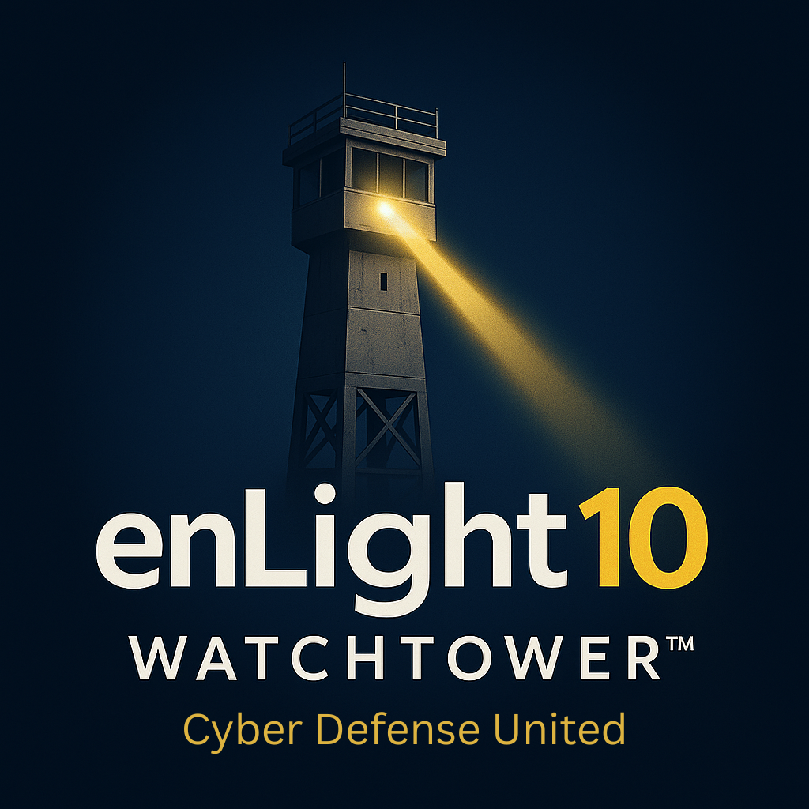

CMMC / NIST readiness
Control gap mapping, SSP support, POA&M support, evidence organization, and remediation planning.
Cyber Defense United
Cyber Defense United is the mission and DoD/DIB variant of enLight10's work, focused on assessment, compliance readiness, evidence, constrained environments, and mission cyber risk.
It supports government contractors, public-sector teams, primes, and mission partners that need practical cybersecurity assessment, remediation planning, operational visibility, and defensible documentation.

Control gap mapping, SSP support, POA&M support, evidence organization, and remediation planning.
Assessment and workflow support aligned to program realities, data constraints, and mission networks.
Translate technical findings into mission risk, priorities, and decisions that leaders can act on.
Build defensible records for assessments, audits, oversight, and recurring cybersecurity reviews.
Improve monitoring strategy, response workflows, and reporting without overstating 24/7 maturity.
Support proposals, subcontract delivery, assessment work, and Watchtower-enabled reporting.
Cyber Defense United helps teams understand gaps, organize evidence, prioritize remediation, and improve operational defense in realistic program conditions.